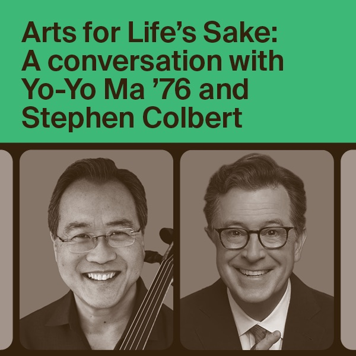

Arts for Life’s Sake: A Conversation with Yo-Yo Ma ’76 and Stephen Colbert
November 5, 2026, – · Sanders Theatre
[SOLD OUT] Crimson Cellos opens the evening, presented by the Office for the Arts at Harvard to celebrate 50 years of its Learning from Performers series. Admission is free with a ticket.